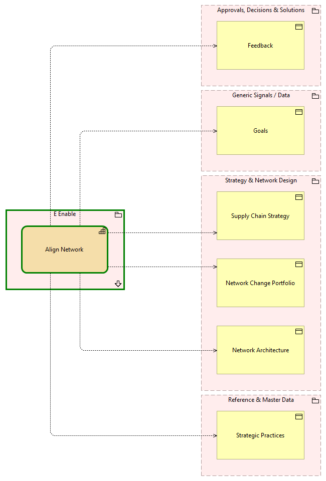

Align Network - Context
(
)

generated_by
build_archi_xml.py::gen_capability_context_view
generator_path
pedro/capabilities/build_archi_xml_assign/build_archi_xml_assign.py
run_at
2026-10-10T17:55:15
view_type
capability_context
E Enable
Align Network
E Enable - Processes
Approvals, Decisions & Solutions
Feedback
Generic Signals / Data
Goals
Strategy & Network Design
Network Architecture
Network Change Portfolio
Supply Chain Strategy
Reference & Master Data
Strategic Practices
Align Network
Feedback
Align Network
Goals
Align Network
Network Architecture
Align Network
Network Change Portfolio
Align Network
Strategic Practices
Align Network
Supply Chain Strategy